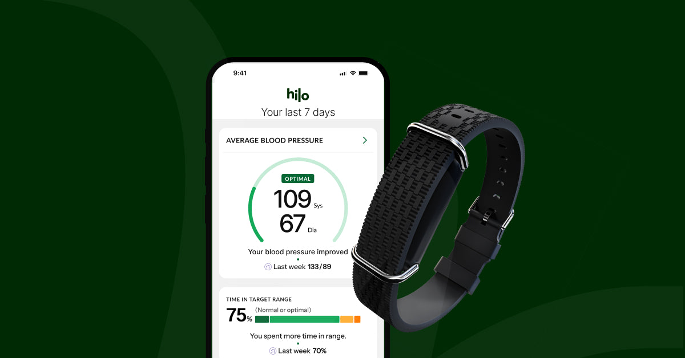
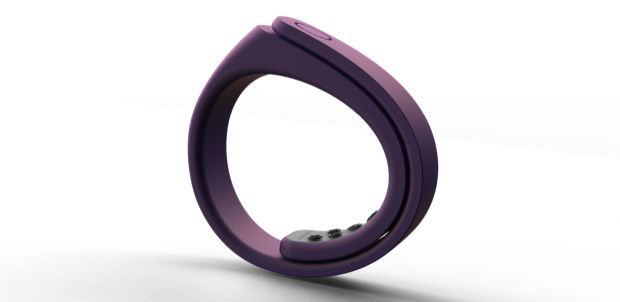
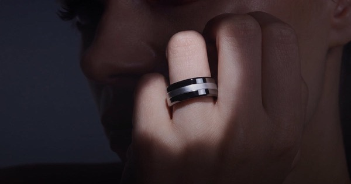

Задача
Артериальная гипертония — самая массовая целевая группа: 1,78 млн человек на диспансерном учёте. Целевой показатель программы управления заболеванием — удержание давления ниже 140/90. Именно этот показатель общий браслет и не закрывает, поэтому гипертония выделена в отдельный продукт линейки.
2. Гипертония — эта страница: как дать цифру давления тем, кому она нужна ежедневно.
3. Глюкоза — третий продукт, к работе приступаем позже. Разведка уже сделана: категория не легализована, у китайских заводов глюкозного сенсора в спецификациях нет, а честная рамка — «оценка риска», а не измерение сахара.
Мы приняли это сознательно: оптическая оценка давления без манжеты не подтверждена наукой, и требование DB-411 отключает её в серийной прошивке. Европейское и американское кардиологические общества не рекомендуют такие данные для клинических решений, а FDA вынесло предупреждение Whoop ровно за эту функцию. Решение оказалось верным и со временем стало обоснованнее.
Но задача осталась: для гипертоника ценность браслета — скрининг фибрилляции предсердий, поведенческий контур и приверженность, а цифру давления даёт манжетный тонометр. Эта страница — о том, можно ли закрыть разрыв чужими руками: через партнёрство с теми, кто цифру давать умеет.
Продукт: браслет с микроманжетой
Второй продукт линейки отличается от общего браслета одной деталью – в ремешок встроены микронасос и воздушная камера. Эта деталь меняет всё: класс изделия, цену, срок выхода и то, какой показатель поликлиники он закрывает.
Общий браслет для гипертоника даёт ритм, скрининг фибрилляции предсердий, сон, активность и приверженность – но не цифру давления. Целевой показатель программы управления заболеванием по гипертонии – достижение уровня ниже 140/90 – им не закрывается, нужна манжета. Мы это зафиксировали в клинической модели с самого начала и отключили оптическую оценку давления в серийной прошивке требованием DB-411.
SKU C закрывает именно этот разрыв. Принцип – осциллометрия: прибор физически пережимает артерию, как обычный тонометр, а не оценивает давление по оптической пульсовой волне. Это единственный способ, признанный регуляторами и клиническими обществами; всё остальное в мире – либо оценка с обязательной калибровкой манжетой, либо заявление без допуска.
- Что добавляется в железо
- микронасос, воздушная камера в ремешке, датчик давления, аккумулятор большего объёма, корпус под нагрузку
- Что даёт клинически
- цифру давления и суточный профиль – закрывает целевой показатель ПУЗ, чего общий браслет не делает
- Чем платим
- автономность падает с 7–14 дней до суток при включённом суточном мониторинге; ремешок становится частью медизделия и подбирается по обхвату запястья
- Класс риска
- 2а – как у общего браслета, но добавляется валидация по ISO 81060-2, а это клинические испытания на людях
- Место в линейке
- не замена общему браслету, а отдельное изделие для одной группы: гипертоников, которым цифра нужна ежедневно
Референс по железу – Huawei Watch D2 и вышедший 2 сентября 2026 года D3: те же 26,5 мм воздушной камеры, тот же принцип, подтверждённый регистрацией NMPA и CE MDR. Разница в том, что у них это часы с экраном за 148–190 тысяч тенге в казахстанской рознице, а у нас – браслет без экрана, встроенный в медкарту и рабочее место врача.
Почему осциллометрия, а не оптика
Три технологии, которыми в мире пытаются мерить давление на запястье, — и почему рабочая только одна.
Микроманжета в ремешке
Насос физически пережимает артерию — это миниатюрный тонометр, а не алгоритм. Единственная технология, где цифра настоящая. Так устроены Huawei Watch D2 и D3.
Оптика + калибровка манжетой
Допущено FDA у Hilo, но калибровочная манжета входит в комплект и нужна регулярно. То есть допущен не «браслет вместо тонометра», а «браслет плюс тонометр».
Без калибровки вообще
Заявляют Vital Signals и Valencell. Ни одной опубликованной рецензируемой валидации, ни одного допуска. Академическая позиция: термин «без калибровки» следует понимать операционально, а не буквально.
Кому нужен и почему поликлинике это выгодно
Самая крупная целевая группа проекта – и единственная, где деньги поликлиники завязаны прямо на тот показатель, который закрывает прибор.
- Гипертония на диспансерном учёте
- 1 776 876 человек – итоги 2025 года, Минздрав РК
- Участники программ управления заболеваниями
- 1 174 533 человека, охват 57% – НИИ кардиологии и внутренних болезней
- Целевой показатель по гипертонии
- достижение давления ниже 140/90
- Достигали цели в программе
- 76% при плановом показателе 45% (2018), 65% гипертоников по более поздним данным
Где здесь деньги поликлиники. Стимулирующий компонент подушевого норматива считается по стобалльной шкале, где 1 балл равен 4,5 месячного расчётного показателя. При МРП 2026 года в 4 325 тенге это 19 462 тенге за балл. А 50 баллов из ста – ровно половина стимулирующего компонента – начисляется за полноценное динамическое наблюдение пациентов с болезнями системы кровообращения и сахарным диабетом.
- 50 баллов за наблюдение БСК и СД
- около 1,0 млн ₸ в квартал на организацию
- Участок 500 пациентов на модуле наблюдения
- 500 ₸ × 500 × 12 = 3,0 млн ₸ в год внутренней цены модуля
- С 28.08.2026
- остаток стимулирующего компонента идёт участкам, чей результат минимум на 10% выше среднего по организации – внутри поликлиники появилась конкуренция за показатели
Вторая часть аудитории – розница: пациент, которому врач назначил суточное мониторирование, и человек, уже знающий свой диагноз. Здесь мы конкурируем не с фитнес-браслетами, а с Huawei Watch D2 по 148–190 тысяч тенге и с направлением на суточное мониторирование в поликлинике.
Цена и экономика
Здесь стояли цена прибора и расчёт на 24 месяца. Оба держались на числах, которых у нас нет: цена была получена привязкой к рознице Huawei Watch D2, а вся экономика считалась от неё. Ставить их обратно можно будет, когда придут два ответа – и ни минутой раньше.
- Снизу
- котировка завода по SKU C – настоящая закупочная цена модуля с микроманжетой вместо оценки в 25–45 USD
- Сверху
- ответ главных врачей – сколько поликлиника готова платить за прибор и из какой статьи; стимулирующий компонент идёт прежде всего на выплаты персоналу, а не на оснащение
Что известно и без них: вложения до старта продаж – 30 млн ₸
(регистрация 15, клиническая валидация по ISO 81060-2 около 12 – оценка,
образцы и работа с заводом 3); модуль наблюдения для поликлиники – 0 ₸,
он входит в аренду медицинской системы по внутренней цене 500 ₸ на пациента
в месяц; розничная подписка – 690 ₸ в месяц. Эти величины от цены прибора
не зависят. Расчётная модель сохранена в tools/calc-ag-product.py
и снятый текст – в docs/cena-i-ekonomika-snyato.md.
Регистрация и производство
Класс риска тот же, что у общего браслета, но появляется отдельная клиническая задача, которой у него нет.
Риски и что это даёт
Четыре риска, из которых два снимаются запросами, а два остаются предметом решения.
- Пациенту
- давление меряется само, в том числе ночью, без манжеты на плече и без похода в поликлинику; цифры сразу видит врач
- Врачу
- суточный профиль вместо разовых замеров на приёме: видно ночное давление и утренний подъём – то, ради чего и назначают суточное мониторирование
- Поликлинике
- закрывается целевой показатель программы управления заболеванием, на который завязана половина стимулирующего компонента
- Проекту
- второй продукт линейки на той же инфраструктуре: приложение, серверы и панель врача уже построены и не считаются заново
Шесть путей закрыть давление
Всё, что разобрано выше, сведено в одну матрицу по единым критериям. Это главный раздел страницы: по нему принимается решение.
- Что это
- котировка у китайского завода, второй продукт линейки
- Цифра АД
- да, настоящая
- Статус в РК
- своё удостоверение, класс 2а
- Цена
- выше потолка 11,5 USD FOB (оценка)
- Что требуется
- запрос в RFQ и валидация по ISO 81060-2
- Статус
- ⏳ в работе
- Цифра АД
- да, прямая тонометрия
- Статус в РК
- нет
- Цена
- неизвестна
- Что требуется
- ответить на встречные вопросы и принять риск небольшого поставщика
- Статус
- ✅ диалог идёт
- Что это
- H9D20 с открытыми данными под брендом Damumed
- Цифра АД
- да
- Статус в РК
- нет, и сам контур закрыт вне КНР
- Цена
- не публикуется
- Что требуется
- капитал от 5 млн юаней и снятие географического ограничения
- Статус
- ⏸ черновик
- Что это
- кольцо CART BP pro в наш канал
- Цифра АД
- да
- Статус в РК
- CE-MDR сокращает путь в ЕАЭС
- Цена
- $392 розница
- Что требуется
- канал в поликлиники и подбор размеров колец
- Статус
- ✅ отправлено 06.09
- Цифра АД
- да, но с калибровкой манжетой
- Статус в РК
- нет
- Цена
- условия лицензии неизвестны
- Что требуется
- решить вопрос облачного расчёта
- Статус
- ✅ отправлено 05.09
- Цифра АД
- без допуска
- Статус в РК
- нет
- Цена
- условия лицензии неизвестны
- Что требуется
- своя клиническая валидация; допуска FDA нет три года
- Статус
- ✅ отправлено 06.09
Пять выводов о рынке
1. Побеждает не технология, а способ входа в систему здравоохранения. Sky Labs с кольцом на оптическом датчике обошёл технологически более сильных конкурентов, потому что зашёл через возмещение и назначение врача. Это подтверждает нашу ставку в варианте А.
2. Международная экспансия здесь идёт только через локального партнёра. Sky Labs: Otsuka в Японии, IEM в Европе, Omron в рознице. Huawei вне Китая: Dubai Health, QCRI, HM Hospitals. Никто не выходит на новый рынок сам. Это наш главный аргумент в любых переговорах: мы — именно такой партнёр для Казахстана.
3. Независимая валидация продолжает бить по лидерам. Работу по Aktiia ретрагировали, а независимая проверка израильского пластыря Biobeat в PLOS One нашла существенную потерю данных. Чужим маркетинговым цифрам не верить.
4. Разрыв между допуском и клиническим признанием никуда не делся. Из шести компаний допуски FDA есть у трёх, но ни одна не переубедила европейское и американское кардиологические общества. Ссылаться на чужие допуски как на доказательство точности нельзя.
5. Ни один вариант не решает задачу первой партии. Вариант А остаётся рекомендацией, а эти переговоры — способ добыть недостающее: цифру давления вторым продуктом линейки и требования к оптическому тракту для запроса заводам.
Что дальше
Оперативные даты – в календаре наверху страницы. Здесь то, что не привязано к конкретному дню.
- ⏸ у владельца
- запрос в Huawei Technologies Kazakhstan – заход через личный контакт, черновик готов, даты нет
- осень 2026
- проверить публикацию исследования Vital Signals на 451 участнике
- январь 2027
- проверить, во что вылились исключения FDA по оптическому измерению давления
docs/pisma-shest-kompaniy.md и docs/pismo-huawei-kz.md.
Письмо в Huawei Kazakhstan (aiman.sakhova@huawei.com – контактное лицо бизнес-группы
предприятия) сознательно не отправлено: у владельца есть тёплый контакт
в компании, заход будет через него.
🇨🇳Huawei как партнёр: что доступно нам, а что нет
Речь здесь о компании и о том, можно ли с ней работать: какие у Huawei контуры, что из них доступно в Казахстане, где проходит стена и что мы просим на переговорах. Разбор самого устройства — в следующем разделе.

Фото: qingyun.huawei.com (открытый источник).

Фото: пресс-материалы Huawei (notebookcheck.net).
Три контура Huawei — и их постоянно путают. Потребительский (Huawei Health и Health Kit, около 170 стран, включая Казахстан). Корпоративный 擎云 Qingyun (устройства H9D20 и H3550, только материковый Китай). Исследовательский (платформа Terve Research в Европе, прямые проекты с клиниками). В китайских кейсах впечатляет второй, а доступен нам первый — самый ограниченный.
Договор. Пользовательское соглашение потребительского Health Kit, раздел 2.1 (6): «You may not use this Service in connection with any product or service that may qualify as a medical or scientific device». Damumed — медицинская информационная система, и панель врача на этих данных под определение попадает.
Почему разговор всё равно имеет смысл. Huawei работает в Казахстане с 1998 года, меморандум с Министерством здравоохранения подписан ещё в 2019 году, с Министерством цифрового развития — 29 июля 2025-го. Есть локальное юрлицо и раздел «Здравоохранение» на корпоративном сайте. В Китае модель называется «платформа плюс экосистема»: Huawei даёт устройство и открытые данные, партнёр пишет приложение под конкретную нозологию — ровно та роль, на которую претендует Damumed. Вне Китая так уже работают Dubai Health, катарский QCRI и испанская HM Hospitals.
Чего в этом направлении нет: дистрибуция потребительских устройств Huawei снята — закуп Band 10 в РК (16 369 ₸ от 100 шт) выше нашей розничной цены 14 990 ₸ и вчетверо выше себестоимости. Watch D2 и D3 остаются справочно: как ориентир цены и как ответ главврачу на вопрос, почему наш браслет не меряет давление.
Разбор составлен 06.09.2026 по официальным страницам Huawei и Huawei Qingyun, документации для разработчиков и пользовательскому соглашению Health Kit. Исходный текст — research/10-huawei-partnership.md.
🇨🇳Устройство H9D20: эталон требований к нашему прибору
Корпоративная версия Watch D2: та же аппаратная платформа в другой юридической упаковке. Четыре регистрации NMPA, открытые данные партнёру и заводская кастомизация под чужой бренд — всё то, что нам нужно, и всё это недоступно за пределами Китая.
Что это и почему важно
H9D20 — корпоративная версия Huawei Watch D2 под маркой 擎云 (Qingyun), представленная 27 декабря 2024 года на отраслевом саммите Huawei в Шэньчжэне. Официальный класс изделия — «носимый регистратор суточного артериального давления».
Три вещи, которые надо знать про него в первую очередь.
Первое: это не отдельная разработка, а Watch D2 в другой юридической упаковке. Габариты, вес, экран, ширина воздушной камеры и даже комплект поставки совпадают до миллиметра. Отличие не в железе, а в трёх добавленных правах: регистрация медизделия, открытие данных партнёру и заводская кастомизация под заказчика.
Второе: регистраций не одна, а четыре. Само устройство плюс три программных модуля — ЭКГ, аритмия по пульсовой волне, апноэ сна. Каждый со своим номером. Это объясняет, почему повторить такой продукт своими силами нереально.
Третье: стена — география, а не деньги. Интерфейс, который отдаёт давление и RR-интервалы, работает только внутри материкового Китая.
Характеристики
По официальному листу характеристик Huawei Qingyun — данные первичные, не пересказ обзоров.
- Габариты
- 48 × 38 × 13,3 мм
13,3 — самая тонкая часть, без зоны датчика - Вес
- около 40 г без ремешка
- Обхват запястья
- 130–210 мм
ремешок M — 130–160, L — 161–210 - Ширина ремешка
- 26,5 мм, фторкаучук
- Экран
- 1,82" AMOLED, 480 × 408, 347 PPI
- Управление
- вращающаяся корона + кнопка-электрод ЭКГ
- Датчики
- 9-осевой инерциальный, оптический пульсовый, ЭКГ, освещённости, барометрический, температуры тела, дифференциального давления, Холла
- Связь
- Bluetooth 5.2 (BR+BLE), NFC, динамик, микрофон
- Совместимость
- HarmonyOS 2+, Android 8.0+, iOS 13.0+
- Защита
- IP68, зарядка беспроводная 5 В / 1 А
Автономность — главный компромисс
- Обычное использование
- 6 дней
- С суточным мониторированием (интервал 15 мин)
- 1 день
🔑 Цена честной цифры давления — автономность. Наш собственный браслет рассчитывается на 7–14 дней; здесь при включённом суточном мониторинге — одни сутки. Это физический смысл вывода из исследования по давлению: микроманжета — другой класс изделия. И это же — готовый ответ главврачу на вопрос, почему наш браслет не меряет давление.
Как измеряет
Сенсорная платформа называется 玄玑 (Xuanji). Измерение давления собрано из высокоточного датчика давления, микронасоса и механической воздушной камеры в ремешке. Принцип — осциллометрия, то есть физическое пережатие артерии, а не оценка по оптической пульсовой волне.
Заявленные особенности: многозонная многоканальная оптическая архитектура, сверхточное светоизолирующее стекло, камера шириной 26,5 мм с текстурой для равномерного сжатия и цельная конструкция ремешка с камерой, снимаемая одним нажатием.
Четыре регистрации, а не одна
Самая ценная часть разбора: Huawei публикует номера удостоверений прямо на странице продукта. Отдельно регистрируется железо и отдельно — каждый аналитический программный модуль.
Плюс отдельное свидетельство об утверждении типа средства измерений — прибор признан ещё и измерительным инструментом, а не только медизделием.
Что из этого следует для нас. Во-первых, архитектура «железо — одно медизделие, аналитическое ПО — другое» подтверждается практикой крупнейшего производителя: именно её мы закладываем в собственный регпакет. Во-вторых, обратите внимание на осторожность формулировок: «в состоянии покоя», «18 лет и старше», «для справочного анализа медработниками», и по каждому модулю — «не является непосредственным основанием для клинического диагноза». Даже с четырьмя регистрациями Huawei не заявляет диагностику. Это калибр, на который нужно равняться в наших материалах для поликлиник.
Клиническая валидация заявлена совместно с тремя крупнейшими клиниками Китая — Ruijin Hospital Шанхайского университета Цзяотун, Peking Union Medical College Hospital и 301 Hospital. ⚠️ Публикации по этим работам не проверялись: это заявление производителя.
Что отдаёт партнёру — и где стена
Huawei называет три канала получения данных корпоративным клиентом: SDK, прямое подключение данных приложения на самих часах и облачная стыковка. Открываются «данные высокого уровня»: измерения давления, анализ ЭКГ, анализ аритмии по пульсовой волне.
Отдельно в сноске Huawei: SDK первой очереди поддерживает только Android.
Порог входа для корпоративного разработчика
- Базовый
- от 500 000 юаней (≈32 млн ₸, оценка)
- Высокий — именно там давление и ЭКГ
- от 5 000 000 юаней (≈320 млн ₸, оценка)
Кастомизация: законный «свой бренд»
Huawei официально предлагает корпоративным клиентам изменить логотип при включении, предустановленные циферблаты, коробку, цвет ремешка и тиснение на нём, а также «кастомизацию программных и аппаратных возможностей и разработку специальных функций» силами своих специалистов.
🔑 Это принципиально важно для понимания варианта В. Формально существует законный способ выпустить устройство с медицинской регистрацией под оформлением Damumed. Та самая схема own-brand labelling, которую мы обсуждаем с китайскими заводами, у Huawei есть — просто она работает только внутри Китая и только через корпоративный канал Qingyun.
Микроосмотр и пять исследований
Функция «микроосмотр одним касанием» формирует отчёт из 11 показателей: давление, пульс, SpO2, анализ аритмии, скрининг апноэ, оценка риска гипергликемии и другие. ⚠️ Само ПО микроосмотра медизделием не является — Huawei пишет это прямо.
Ограничения программ: не применимы для лиц младше 18 лет, для диабета I типа, гестационного и других особых типов диабета; при работе с устройствами iOS часть исследовательских функций недоступна.
H9D20 против Watch D2
Одна и та же аппаратная платформа в двух юридических упаковках.
«Watch D2 уже продаётся в Казахстане и имеет CE MDR. Что мешает открыть на нём тот же уровень данных, который открыт на H9D20 внутри Китая?»
Ответ на него определяет, есть ли у варианта В будущее вообще.
Противопоказания — готовый список для нашего досье
Huawei публикует 18 предупреждений и 10 примечаний. Для нас это ценный материал: перечень ограничений, составленный компанией, которая прошла регистрацию и отвечает за формулировки.
Самое существенное: устройство не валидировано для новорождённых и беременных; нельзя самостоятельно ставить диагноз, лечиться и корректировать лекарства по его данным; нельзя носить на руке, где идёт инфузия, переливание или стоит катетер; после мастэктомии или удаления лимфоузлов — только после консультации врача; нельзя измерять давление слишком часто — возможны нарушение кровотока и синяки; аллергия на нейлон, фторкаучук или ТПУ — противопоказание; нельзя использовать рядом с МРТ, КТ и высокочастотным хирургическим оборудованием.
Отдельно названы состояния, при которых точность снижается: распространённые аритмии (экстрасистолия, фибрилляция предсердий), артериосклероз, плохая перфузия, диабет, преэклампсия, болезнь почек. А также густые волосы на запястье, татуировки и шрамы.
Что забрать себе, ничего не покупая
Даже если сотрудничество не состоится, разбор даёт четыре готовых актива.
- Перечень противопоказаний и предупреждений
- основа инструкции по применению при регистрации в РК
- Архитектура регистрации: железо и каждый модуль ПО — отдельно, формулировки узкие
- подтверждает нашу схему регпакета
- Честная формулировка про глюкозу: «оценка риска при ношении от трёх суток»
- аргумент против заводов, обещающих неинвазивный сахар
- Реальная цена суточного мониторинга — один день автономности
- ответ главврачу на вопрос, почему наш браслет не меряет давление
Итог
H9D20 — не вариант закупки, а эталон и источник требований. Купить его в Казахстане нельзя, данные из-за рубежа получить нельзя, регистрации здесь не действуют.
- Включить вопрос об уровне данных на Watch D2 в письмо Huawei Kazakhstan
- сделать
- Использовать перечень противопоказаний в нашем регистрационном досье
- сделать при подготовке РУ
- Опираться на архитектуру «железо + модули ПО отдельно»
- уже соответствует плану
- Рассматривать закупку H9D20
- невозможно
- Рассчитывать на SDK Huawei для поликлиничного контура в РК
- невозможно вне КНР
Разбор составлен 06.09.2026 по официальной странице продукта и листу характеристик Huawei Qingyun, листу характеристик Watch D2 для сверки, документации Huawei для разработчиков и отраслевым публикациям Китая. Исходный текст — research/12-qingyun-h9d20.md.
🇰🇷Sky Labs — CART BP pro
Кольцо, которое зашло в систему здравоохранения там, где не смогли более богатые конкуренты: государственная страховка Кореи платит за него по коду суточного мониторирования. Главный кандидат в партнёры по нашей оценке.
Почему именно они
Из шести компаний категории Sky Labs — единственная, кто решил не техническую задачу, а системную: попал в государственное возмещение.
В марте 2023 года корейский регулятор MFDS допустил CART BP pro как медизделие, а в июне 2024-го страховая служба HIRA включила его в возмещение по существующему коду E6547 — «24-часовое амбулаторное мониторирование артериального давления». Это сделало прибор первым в мире безманжетным монитором давления, за который платит государственная страховка.
Результат виден в цифрах проникновения: прибор назначают в более чем 1 700 медицинских учреждениях, за первый год после запуска — свыше 150 тысяч назначений, он принят во всех топ-5 больницах Кореи и в 38 из 47 третичных больниц. Пациент доплачивает 5–6 тысяч вон (около 4 долларов), остальное покрывает страховка.
Характеристики
По руководству пользователя производителя — первичный документ, а не пересказ обзоров.
- Форма
- кольцо, 8 моделей, отличаются только размером
- Диапазон измерения
- систолическое 70–180, диастолическое 40–120 мм рт. ст.
- Заявленная точность
- среднее расхождение ±5 мм рт. ст., стандартное отклонение 8
- Оптика
- красный 660 нм (0,35 мВт), ИК 940 нм (0,35 мВт), зелёный 525 нм (1,00 мВт)
- Связь
- Bluetooth 5.0 BLE, дальность менее 2 м
- Питание
- литий-полимерный аккумулятор 3,7 В, несменный
- Зарядка
- беспроводная через подставку с USB-C, около 2 часов
- Защита
- IP58
- Условия работы
- 5–40 °C, влажность 10–95 %
- Класс защиты
- внутреннее питание, рабочая часть типа BF
Носится строго ориентированно: верх кольца — на тыльной стороне пальца, датчик — на ладонной. Производитель отдельно предупреждает, что аккумулятор несменный, и при длительном хранении кольцо нужно заряжать не реже раза в месяц.
Как измеряет
PPG с пальца плюс свёрточная нейросеть — и осознанный отказ от формата часов.
Оптический датчик снимает пульсовую волну с пальца, сигнал уходит по Bluetooth, а алгоритм отслеживает изменение формы волны свёрточной нейросетью (CNN) и оценивает отклонение давления относительно калибровочного значения.
🔑 Почему палец, а не запястье. Компания формулирует это прямо: кольцо даёт более стабильный сигнал, потому что на запястье точность страдает от разброса размеров и положения датчика. Отсюда восемь размеров вместо универсального ремешка — подгонка вместо компромисса.
Регуляторный статус
- MFDS (Корея), 2023
- допуск медизделия для CART BP pro
- HIRA, 06.2024
- включение в возмещение по коду E6547 — первый в мире случай
- CE-MDR, январь 2026
- на платформу CART — открывает Европу и сокращает досье для ЕАЭС
- MHRA (Великобритания)
- регистрация получена
- FDA
- протокол клинического исследования согласован, допуска пока нет
Клиническая база — и претензия к ней
Единственная компания в списке, сравнившая себя с инвазивным эталоном.
Joung J. и др., Scientific Reports 2023;13:8605 — согласие с артериальной линией, то есть с инвазивным золотым стандартом. В категории, где почти все сравниваются с манжетой, это редкость.
На конгрессе ESC 2025 в Мадриде профессор Jihoon Kim из Samsung Medical Center представил результаты: прибор сохраняет точность при разных положениях руки, включая ниже уровня сердца, и меньше зависит от гидростатического давления. Это один из шести тестов, которых требует Европейское общество по гипертензии.
Как они выходят на новые рынки
Ни одного рынка компания не открывает сама — везде локальный партнёр. Это и есть наш аргумент.
- Корея
- эксклюзивная дистрибуция — Daewoong Pharmaceutical
- Япония
- Otsuka Pharmaceutical, договор 05.02.2026; поставки с 2028 года
- Европа
- IEM GmbH (Германия), 31.08.2026 — интеграция с их системой АБПМ FLOW, старт с Великобритании
- Розница
- Omron Healthcare — инвестиция 3,5 млрд вон в ноябре 2025; обсуждается аптечная сеть
- Казахстан
- партнёра нет — это и есть предмет нашего письма
Компания готовит IPO: презентация состоялась 21 августа 2026 года, план — выйти в прибыль к 2028 году при выручке 38,7 млрд вон, к 2030-му — 78 млрд.
Что мы просим
2. Кто будет держателем регистрационного удостоверения в ЕАЭС — они сами или локальный партнёр.
3. Можно ли направлять данные на локальный сервер, есть ли API для нашей панели врача.
4. Цена для программы здравоохранения и модель — продажа прибора или плата за исследование, как в корейской схеме возмещения.
5. Совместный клинический пилот с публикацией.
Риски. Компания на пороге IPO и занята Японией, Европой и США — Казахстан может не попасть в приоритеты. Цена потребительской версии $392 для массовой поликлиники запретительна: разговор имеет смысл про медицинскую версию с возмещением. Кольцо требует подбора размера — логистически сложнее браслета.
Профиль составлен 06.09.2026 по руководству пользователя производителя, пресс-релизам Sky Labs и Otsuka, публикации в Scientific Reports, материалам ESC 2025 и корейским отраслевым изданиям.
🇨🇭Hilo — Hilo Band
Лидер категории по деньгам и допускам: первый в мире безрецептурный допуск FDA на безманжетный монитор давления. Но в США продаёт браслет как оздоровительный продукт, а медизделием там числится манжета.

Кто это
Не гаражный стартап: технология вышла из государственного исследовательского центра, а до первого допуска FDA прошло больше семи лет.
Компания основана в мае 2018 года как спин-офф швейцарского центра CSEM. Основатели Mattia Bertschi и Josep Solà занимались неокклюзивным измерением давления в CSEM пятнадцать лет до основания компании. За технологией — более 35 патентов и вклад в 120 с лишним рецензируемых публикаций. Собственное название технологии — oBPM (оптическое измерение давления).
Привлечено более $119 млн за шесть раундов; последний — расширение Series B на $19 млн от семейного офиса Майкла Делла в июле 2026 года. CEO с октября 2025 года — Stefan Petzinger.
Характеристики
Система из двух приборов: браслет измеряет, манжета калибрует.
- Габариты браслета
- 8,5 × 16 × 34 мм
- Вес
- 16–18 г
- Обхват запястья
- 14–21 см (манжета — плечо 22–42 см)
- Аккумулятор
- Li-Ion 3,7 В, 55 мА·ч; 500 циклов, срок службы более 3 лет
- Автономность
- до 15 дней
- Защита
- IP68 браслет, IP22 манжета
- Связь
- BLE 5.0 (браслет), BLE 4.2 (манжета)
- Диапазон
- 40–250 мм рт. ст., ЧСС 40–180
- Точность
- ±5 мм рт. ст. браслет, ±2 манжета
- Температура применения
- 5–40 °C, контактная часть до 43 °C
Как измеряет
Два светодиода, анализ пульсовой волны и облако.
Браслет снимает оптический сигнал с запястья двумя светодиодами. Он сам определяет, что пользователь неподвижен, и только тогда запускает измерение — отсюда случайные интервалы: два–три раза в час, около 25 замеров в сутки, включая ночь. Никаких лампочек и уведомлений, носится непрерывно.
Дальше сигнал уходит в приложение и на сервер компании, где алгоритм анализа пульсовой волны считает давление. Патенты, на которых всё построено, принадлежат CSEM.
Калибровка: манжетой раз в 30 дней, на противоположной руке; сторонние тонометры использовать нельзя. Возраст применения по инструкции — 21–85 лет, тогда как в допуске FDA указано 22–59: формулировки расходятся, при ссылках нужно проверять источник.
Регуляторный статус и парадокс США
Допуск есть, но продают под ним не то, что допущено.
- ЕС
- браслет и манжета — класс IIa по MDR, орган TÜV SÜD 0123
- США
- 510(k) K250415 от 02.07.2025 — первый безрецептурный допуск в истории категории
- Канада, Австралия, Саудовская Аравия
- допуски получены
- CALFREE (без калибровки)
- CE-марка 12.06.2024, класс II
Урок для нас: даже лидер с $119 млн и первым в мире допуском не вывел браслет на крупнейший рынок как медизделие. Наша осторожность с отключением оптического давления — отраслевая норма, а не перестраховка.
Точность в сравнении
Цифры, которые стоит показывать главврачу.
Независимое издание сравнивает прямо: ±5 мм рт. ст. у Hilo Band против ±3 у Huawei Watch D2 и ±2–3 у классических манжетных приборов. Вывод обзора: для пациента с гипертонией браслет — «в лучшем случае дополнение к традиционному измерению, а не замена».
Отдельная история — ретракция независимой валидации. В апреле 2025 года группа UCL опубликовала работу: 31 участник носил браслет и медицинский суточный монитор одновременно. Результаты были жёсткие — пределы согласия около ±30 мм рт. ст. по систолическому, чувствительность к выявлению высокого давления около 50 %. После обращения производителя журнал выпустил «выражение обеспокоенности», а 31 января 2026 года статью отозвали — по процедурному основанию: данные 31 участника собирались через два аккаунта, что противоречит инструкции.
Бизнес-модель
Дешёвое железо и обязательная подписка.
- Великобритания
- £79,99 железо + £119,99/год
- ЕС
- €119,99/год
- США (Hilo Core)
- $89,99 + $149,99/год
🔑 Без активной подписки браслет перестаёт измерять. После отмены — 30 дней ограниченного доступа, затем новые измерения недоступны. Обоснование компании: алгоритмы живут в облаке и требуют постоянных обновлений.
Для сравнения: наша подписка — 690 ₸/мес, это примерно в восемь раз дешевле. Конструкция та же — деньги на сервисе, а не на приборе, — только у них платит потребитель, а у нас поликлиника.
Что мы просим и чего ждём
2. Может ли расчёт идти локально или на серверах в Казахстане.
3. Коммерческая модель лицензии.
4. Требования к оптическому тракту — длины волн, конфигурация светодиодов и фотодиодов, частота дискретизации, доступ к сырому сигналу.
5. Условия дистрибуции их готового прибора в Казахстане — запасной путь.
🔑 Четвёртый вопрос ценен независимо от исхода. Требования к оптике от компании, единственной в мире прошедшей FDA с оптическим измерением давления, — это бесплатный ориентир качества PPG-модуля для оценки китайских заводов. Даже отказ по лицензии оставляет нам этот критерий.
Чего ждать. Технология CALFREE получила CE-марку в июне 2024 года, но за два с лишним года не появилось ни одного публично названного партнёра, а на странице анонса до сих пор стоит пометка «пока не доступна коммерчески». Ожидания сдержанные.
Профиль составлен 06.09.2026 по руководству пользователя, материалам hilo.com и support.aktiia.com, базе FDA 510(k), независимым обзорам Wired и Notebookcheck. Полный корпоративный профиль — research/08-hilo-profile.md.
🇺🇸Valencell — Fingertip Monitor
Единственная компания списка, у которой нечего показать: прибор анонсировали в 2021-м, показали на CES в 2023-м, а допуска FDA нет до сих пор. Но интересна она не прибором — это лицензиар сенсорных технологий Samsung, Bose, Sony и Huawei.
Прибор показывали на выставке CES в январе 2023 года, но в продажу он не вышел. Это единственная компания из шести, по которой нечего показать, и сам этот факт — часть оценки.
Что мы недооценили в первом разборе
В сводном отчёте компания была описана одной строкой — «своё устройство так и не вышло». Это верно и упускает главное.
Valencell по своей природе не производитель, а лицензиар. Двадцать лет компания продавала сенсорные технологии другим: их оптические алгоритмы стоят более чем в 90 продуктах и десятках миллионов устройств Samsung, Suunto, Bose, Jabra, Huawei и Sony. Портфель — более 150 патентов.
Собственный прибор для измерения давления был попыткой выйти из роли поставщика технологии в роль владельца продукта. Именно эта попытка и забуксовала.
Что было заявлено о приборе
Данные из анонса на CES 2023 и материалов компании — серийного изделия нет, поэтому характеристики остаются заявленными.
- Форма
- зажим на средний палец плюс приложение
- Время измерения
- менее минуты
- Принцип
- PPG + собственные ИИ-модели + антропометрия (возраст, вес, пол, рост)
- Калибровка
- не требуется (заявлено)
- Обучающая выборка
- наборы PPG более чем 7 000 пациентов
- Экран
- на самом устройстве, плюс передача в приложение по Bluetooth
- Заявленная цена
- $99
🔴 Статус: продукт не вышел
Хронология, которая говорит сама за себя.
2021 — анонс намерения выпустить собственный прибор. Январь 2023 — публичная демонстрация на выставке CES. Конец 2023 — заявленная цель по допуску FDA. Сентябрь 2026 — допуска нет.
На главной странице компании под описанием прибора стоит дословная оговорка: «Not FDA cleared; not for sale in the United States», а сам продукт описан в будущем времени — «is planning to launch».
Смена руководства
Важно для того, кому писать.
Steven LeBoeuf, со-основатель и президент компании с октября 2006 года, ушёл в октябре 2024-го — после восемнадцати лет — и основал компанию Quellios. Во многих обзорах, включая наш первый, он до сих пор указан как действующий президент; это устаревшие данные.
Действующий CEO — Kent Novak (с ноября 2018 года). За наше направление отвечает Mark Felice, VP of Business Development and Licensing — именно ему адресована просьба о переадресации в отправленном письме.
Что мы просим и чего ждём
2. Требования к оптическому тракту — длины волн, конфигурация светодиодов и фотодиодов, частота дискретизации, доступ к сырому сигналу, механические ограничения на размещение датчика.
3. Может ли алгоритм работать на устройстве или на наших серверах, а не в облаке поставщика.
4. Коммерческая модель: разовый платёж, роялти с прибора или плата за замер.
Ожидания низкие, и мы это написали прямо. Лицензия без регуляторного допуска даёт нам ровно то, от чего мы отказались, когда отклонили вариант «свой алгоритм»: технологию, которой нельзя ничего заявить. В письме сказано честно — если технология не готова к лицензированию, лучше узнать это раньше.
🔑 Ценность запроса в другом. Требования к оптическому тракту от компании, чьи датчики стоят у Samsung и Huawei, — бесплатный ориентир качества PPG-модуля для оценки китайских заводов. Ровно та же польза, что мы ждём от четвёртого вопроса к Hilo.
Профиль составлен 06.09.2026 по материалам valencell.com, анонсу на CES 2023 (HIT Consultant), профилям компании и руководителей.
🇱🇺LiveMetric — LiveOne
Единственный прибор категории, который измеряет давление механически: массив датчиков прижимается к лучевой артерии. Допуск FDA есть, а компании фактически нет — десять человек в поиске капитала.
Что ответили по существу:
1. Поставки. Могут поставлять LiveOne партнёрам за пределами США и ЕС — при соблюдении местных регуляторных требований. Открыты к работе через сильного локального партнёра, где это оправдано коммерчески и регуляторно.
2. Данные. Понимают требования к локальному хранению медицинских данных и необходимость встроить измерения в существующий клинический процесс. Готовы обсуждать нашу архитектуру, требования к хранению и интеграцию по API со своей технической командой. Прямого «да, расчёт можно вынести к вам» пока нет — вопрос вынесен на обсуждение.
3. OEM и лицензия. Начать готовы с поставки готового прибора. OEM или лицензирование технологии — на более позднем этапе, в зависимости от масштаба, вплоть до локального производства. Сначала хотят понять объёмы.
4. Регистрация. Могут предоставить техническую и регуляторную документацию для локальной регистрации. Кто будет держателем удостоверения и какой объём поддержки они дадут — определится позже; конкретных обязательств на этом этапе сознательно не берут.
2. Размер первого пилота и последующие годовые объёмы.
3. С каких хронических заболеваний или групп начинаем.
4. Как в Казахстане устроено возмещение за дистанционное наблюдение и медизделия — государство, страховка, поставщики услуг или сам пациент.
5. Damumed закупает и разворачивает приборы сам или закупку ведут клиники, больницы, государственные структуры.
6. Ожидаемый срок от успешного пилота до широкого развёртывания.
7. Есть ли у нас опыт регистрации медизделий в Казахстане и ЕАЭС и кто поведёт регистрацию — мы или локальный партнёр.
✅ Ответ отправлен 6 сентября в 17:19. В нём: масштаб Damumed (1 700 клиник, 118 тыс. врачей, 5,3 млн пациентов в приложении), механика стимулирующего компонента в долларах, наша модель домашнего ношения вместо кабинетного, готовность быть держателем регистрационного удостоверения, возможность регистрации по правилам ЕАЭС на пять стран и 185 млн человек, механизм рассрочки через существующие арендные платежи клиник и техническое описание требуемой интеграции. Плюс четыре встречных вопроса — ключевой о том, работает ли домашняя конфигурация LM1CS без планшета и без медработника.

Чем принципиально отличается
Не оптика и не манжета, а прямая тонометрия.
Пять приборов из шести в этой категории считают давление из оптического сигнала. LiveOne — исключение: он использует аппланационную тонометрию. Массив МЭМС-датчиков давления высокого разрешения прижимается к лучевой артерии и снимает форму пульсовой волны напрямую — тот же принцип, что у инвазивных систем, только через кожу.
Отсюда два следствия, которых нет ни у кого другого в списке. Первое: калибровка манжетой не нужна вообще — прибор автокалибруется. Второе: он показывает непрерывную форму пульсовой волны лучевой артерии, а не только два числа.
LM1CS — потребительская: «браслет, который можно комфортно носить весь день», управление одной кнопкой, калибровка не нужна, показания видны на собственном экране прибора или в мобильном приложении. Планшет здесь не требуется.
То есть ограничение «только клиника» относится к одной модели, а не к прибору как таковому. Домашняя конфигурация у компании есть, и подтверждение её доступности — первый из четырёх вопросов, которые мы им отправили.
Характеристики
По базе FDA 510(k) и документам FCC.
- Принцип
- аппланационная тонометрия, МЭМС-массив высокого разрешения
- Датчики
- 4 датчика давления + акселерометр
- Частота дискретизации
- 100 Гц
- Калибровка
- не требуется
- Точность
- ±3 мм рт. ст. или ±2 % показания; ЧСС ±4 %
- Диапазон
- систолическое 50–250, диастолическое 30–180, пульс 40–199
- Обхват запястья
- 155–210 мм (S: 155–180, L: 180–210)
- Материалы
- силикон 60 Shore A, корпус — анодированный алюминий, пряжка — сталь
- Связь
- Bluetooth 4.0
- Защита
- ⚠️ IP22 — только от брызг
- Температура
- −10…+45 °C
- Компаньон
- для профессиональной модели LM1P — планшет (в допуске указан Microsoft Surface); для потребительской LM1CS — собственный экран прибора и смартфон
Три режима работы: разовый по назначению врача, суточное мониторирование и клинический разовый с наблюдением формы волны.
Регуляторный статус
Допуск сильный, путь к нему был долгим.
FDA 510(k) K201302, решение 4 мая 2022 года, код DXN, 21 CFR 870.1130, класс II. Заявитель — Livemetric (Medical) S.A., Люксембург. Предикаты — TL10 и TL300 Tensymeter. Соответствие IEC 60601-1, IEC 60601-1-2 и ISO 10993-1.
Срок рассмотрения — 719 дней, что сама база 510(k) отмечает как необычно долгий период, указывающий на сложную оценку эквивалентности.
Ограничения применения по допуску FDA (относятся к модели LM1P): только клиническое применение; не для операционных, реанимаций и электрофизиологических лабораторий; тревог нет. Возраст ≥18 лет, при этом в самом допуске целевая популяция указана как старше 27 лет. Противопоказания: беременность, нарушение целостности кожи запястья, обхват вне диапазона, механическая поддержка кровообращения, когнитивные нарушения.
🔴 Клиническая база: восемь человек
Формально критерии стандарта выполнены. По существу — выборка, на которой нельзя строить закупку.
- Многоцентровое в реанимации
- 26 пациентов — смещение САД 0,7 ± 6,6; ДАД 2,0 ± 5,5 мм рт. ст.
- Общая популяция
- 8 человек — смещение САД −1,3 ± 7,2; ДАД −0,4 ± 5,7 мм рт. ст.
- Отдельное исследование NCT03919136
- 40 участников, 3 центра
Оба исследования проведены по ISO 81060-2:2018 против артериальной линии — то есть против инвазивного эталона, и результаты укладываются в критерии. Но восемь человек в общей популяции — это не та доказательная база, на которой закупают приборы для программы на тысячи пациентов.
⚠️ Состояние компании
Здесь наша переговорная позиция сильна — и именно поэтому опасна.
В компании десять человек. С момента получения допуска FDA прошло четыре года без коммерческого разворота. Компания открыто говорит, что находится в процессе привлечения капитала, и участвует в акселераторах — в ноябре 2025 года вошла в HeartX Accelerator.
🔴 Главный риск — выживаемость. Строить регуляторную стратегию на поставщике из десяти человек в поиске капитала нельзя: если компания не найдёт деньги, мы останемся с прибором без поддержки и без пути к регистрации. Разговор имеет смысл как дешёвый эксперимент, а не как опора.
Что мы просим
2. Можно ли передавать измерения на наши серверы через API, минуя облако поставщика.
3. Рассматривают ли лицензирование сенсорной технологии или выпуск под локальным брендом.
4. Поддержат ли регистрационное досье в ЕАЭС и кто будет держателем удостоверения.
В письме прямо сказано, что мы находимся на стадии выбора между собственным устройством и интеграцией готового — и что прямой ответ в любую сторону нам полезен. Для компании такого размера это честная рамка: мы не обещаем объёмов, которых не можем гарантировать.
Профиль составлен 06.09.2026 по базе FDA 510(k) K201302, руководству для медработников и инструкции пользователя (документы FCC), профилям компании в LinkedIn и CBInsights.
🇺🇸Vital Signals — Signal Ring
Кольцо за $399 без подписки, которое обещает измерять давление вообще без калибровки. Основатель — из ранней команды Android. Допуска нет, валидация не опубликована, отгрузка ещё не началась. Мы им не пишем — наблюдаем.

Кто это делает
Команда не из медицины, и это заметно и в плюсах, и в минусах.
Tom Moss — основатель и CEO — один из ранних участников команды Android, со-основатель компании Nextbit (куплена Razer), затем операционный директор производителя дронов Skydio. Vital Signals основал в 2023 году после того, как сам столкнулся с недиагностированной гипертонией. Со-основатель Mohammad Usman — более десяти лет в Masimo, то есть медицинский опыт в команде есть.
Принципиальная позиция основателя: никакой подписки. Его формулировка — «если манжета не берёт с вас абонентскую плату, не буду и я». Он же говорит, что ему все инвесторы объясняли, почему это ошибка.
Характеристики
По материалам компании и обзорам — независимых тестов ещё нет.
- Форма
- кольцо, титан снаружи, смола внутри
- Размеры
- US 5–13, носится обычно на указательном пальце
- Защита
- IP68 — до 30 минут на глубине 3 м
- Аккумулятор
- 3 дня кольцо, до 5 дней с зарядным футляром
- Связь
- Bluetooth LE; iOS и Android
- Принцип
- оптический датчик, по заявлению «в 4–5 раз быстрее» конкурентов
- Калибровка
- не требуется (заявлено)
- Синхронизация
- Google Health, Apple Health
- Цена
- $399, без подписки
- Доступность
- предзаказ, отгрузка с октября 2026, только США
Есть отдельный режим Zen Mode — измерение в контролируемых условиях, когда пользователь специально успокаивается.
🔴 Шесть причин не начинать разговор сейчас
1. Допуска FDA нет. Компания сама называет продукт investigational и informational only, прямо указывая, что это не медицинское изделие.
2. Валидация не опубликована. Заявлено многоцентровое исследование на 451 участнике: средняя ошибка −0,3 мм рт. ст. по систолическому и диастолическому давлению, стандартные отклонения 7,2 и 6,1 — формально в рамках ISO 81060-2. Но это данные компании из заказанного ею исследования. Протокол, распределение участников, критерии исключения, референсный метод и подгрупповой анализ не раскрыты.
3. Возражение специалиста. Д-р Jordana Cohen из Пенсильванского университета формулирует его точно: прибор без калибровки должен преодолеть более высокую планку, чем среднее согласие в контролируемом исследовании.
4. Обязательное облако. Расчёт идёт на серверах компании; без соединения результат не отображается. Для нас это тот же блокер, что у Hilo.
5. Неточности в демонстрации. При показе журналистам Bloomberg часть замеров оказалась неверной; компания списала это на посадку кольца.
6. Продукт ещё не в руках покупателей. Продажи только в США, отгрузка с октября 2026 года, независимых тестов и разборов нет.
Что отслеживать
Два события, любое из которых меняет картину.
Отдельно у компании есть медицинская версия прибора, проходящая испытания в четырёх центрах, включая Стэнфорд. Сроки её выхода компания не называет — и это косвенно подтверждает, что нынешняя версия для диагностики не предназначена.
Профиль составлен 06.09.2026 по материалам signalring.com, публикациям The Seattle Times, Engadget, Notebookcheck и разбору healthcarediscovery.ai. Независимых тестов прибора на момент составления не существует.